Introduction - EXTERIOR LIGHTING
- Path
- Descriptions > 55 ELECTRICAL EQUIPMENT > 5540 EXTERIOR LIGHTING > Introduction - EXTERIOR LIGHTING
- Kind
- system description
- Applies to
- all engines; all production periods
- Interactive page
- https://sloeber94.github.io/elrnDB-fPnd/en/#/2753485
Applies to: all engines; all production periods
The vehicle components and their location are illustrated below.
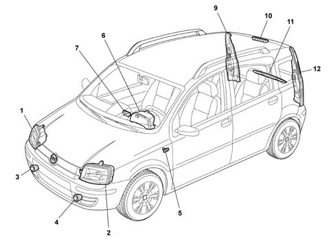
1 - Right front light cluster 2 - Left front light cluster 3 - Right fog lamp 4 - Left fog lamp 5 - Front direction indicator 6 - Headlamp alignment adjustment on instrument panel 7 - Central control panel 8 - Left tail light cluster 9 - Right tail light cluster 10 - Third brake light indicator 11 - Number plate lights
Applies to: all engines; all production periods
The vehicle's exterior lighting system has been designed with two aims in mind:
- to ensure maximum efficiency in terms of complying with international regulations which define the illumination specifications of the various components
- to blend in with the design of the vehicle so that the various components reflect the image.
Applies to: all engines; all production periods
REAR LIGHT CLUSTER
The vehicle's exterior lighting system has been designed with two aims in mind:
- Ensuring maximum efficiency in terms of complying with international regulations which define the illumination specifications of the various components
- to blend with the design of the vehicle so that the various components enhance the overall image.
- The exterior appearance is one-piece and multicoloured. The selected functional option is a one-piece light cluster
The light cluster carries out the following lighting functions:
- Red incoroporated side light and brake light.
- Orange turn signal
- 1 red coloured (left) rear fog lamp
- 1 reversing light vehicle indication colourless
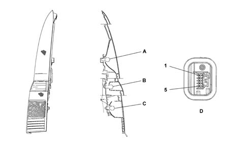
A - 12V - 5W side light and 12 V - 21 W brake light (bilux bulb) B - Direction indicator 12V - 21W C - 12V- 21W reversing light (only rght side), Reversing light 12V- 21W (only left side) D - Connector D
Applies to: all engines; all production periods
REAR LIGHT CLUSTER
CONNECTOR PINOUT
- 1 - Brake
- 2 - Position
- 3 - Earth
- 4 - Turn
- 5 - Reverse/Rear fog lamp
The light cluster is made out of heat-resistant ABS. It contains three reflective, parabolic chambers with brake/side light functions (bilux bulb with two filaments 12V - 21 - 5W bayonet fitting) and a direction indicator (single filament bulb 12V - 21W).
Applies to: all engines; all production periods
STRUCTURE OF FRONT LIGHT CLUSTER (HEADLAMPS AND FOG LIGHTS)
This unit consists of:
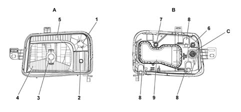
A - Front view B - Rear view C - Connector 1 - Turn signal 2 - Side light 3 - Low/high beam 4 - Reflector 5 - Frame 6 - Adjustment screw for horizontal headlamp axis 7 - Adjustment screw for vertical headlamp axis 8 - Breather plug 9 - Rer cover
Applies to: all engines; all production periods
STRUCTURE OF FRONT LIGHT CLUSTER (HEADLAMPS AND FOG LIGHTS)
The front light cluster is constructed using a fixed, transparent lens reflection technology for all functions (side light, dipped headlamp, main beam headlamp).
The headlamp includes dipped and main headlamps, turn signals and side lights. The corrector is located inside the body. Access to the bulbs is by removing the cap on the headlamp.
The lens (glass-look) cover is made from colourless, lacquered, polycarbonate which has undergone scratchproofing treatment; it is fastened to the casing by means of butyl adhesive to ensure that it is impervious to water. It has the task of guaranteeing even, standardized light without any light escaping outside of the designated areas.
The frame is made out ouf metallic PE60-30. It performs the following functions: turn signal and side lights
The headlamp body is made of 40% loaded Polypropylene, talc PP 75-20, black in colour and treated in the duct area to allow the body to be bonded to the lens. The rear part houses a seat for the cap, the connector seat, seats for light beam adjustment systems and breather plug seats.
Seats for the alignment corrector, reflector fasteners and various attachments are located inside.
The fastening system consist of a pin on the otside of the vehicle and two brackets with slots on metal inserts. Type-approval and customer symbols are printed on the upper headlamp bracket.
The reflector is made out of BMC LPR20 heat-setting plastic, metallic and covered iwth protective transparent varnish or another equivalent treatment. It is fitted with fastenings for the fixed point and horizontal/vertical adjustment that ensure the light beam is unaffected by vibrations even when the road surface is rough. It is fitted with seats for housing the bulb holder and retaining clip. The bulb holder seat is polarised to prevent the bulb being incorrectly positioned. An high-tech dimmer is positioned in front of the high/low beam bulb to prevent direct and secondary beams. The following funtions are shown on the reflector: low, high beam
The settings are adjusted using 2 screws. Adjustment is carried with the bonnet open and a jointed size 12 hexagonal wrench The adjustment angles are: vertical manual ± 3° (to compensate for light beam body tolerances), electrical vertical to compensate for ride changes (2° 30'), horizontal ±1° 30'.
Bulbs present:
- Halogen H4LL for 12V-55W low/high light function
- All glass for the side lights 12V-5W
- PY21W for direction function
Applies to: all engines; all production periods
STRUCTURE OF FRONT LIGHT CLUSTER (HEADLAMPS AND FOG LIGHTS)
CONNECTOR PINOUT
- 1 - Low beam
- 2 - High beam
- 3 - N.C.
- 4 - Side light
- 5 - N.C.
- 6 - Turn signal
- 7 - N.C.
- 8 - N.C.
- 9 - N.C.
- 10 - N.C.
- 11 - Headlamp alignment motor control+
- 12 - N.C.
- 13 - Headlamp alignment motor control-
- 14 - Earth
Applies to: all engines; all production periods
SIDE DIRECTION INDICATOR
The side direction indicator is illustrated below.
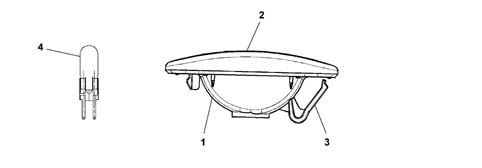
1 - Grey casing 2 - Orange lens cover 3 - Fastening spring 4 - 12V- 5W bulb
Applies to: all engines; all production periods
SIDE DIRECTION INDICATOR
To replace the small bulb, push the lens cover, by hand, in the opposite direction to the direction of travel of the vehicle in order to compress the fastening spring (3). Release the front section and extract the unit. Rotate the bulb holder in an anti-clockwise direction and extract it from the lens cover.
Applies to: all engines; all production periods
ADDITIONAL BRAKE LIGHT
The additional brake light function is achieved through a multi-bulb lamp and light beam coming out of the rearscreen serigraphy, fitted on the upper part of the tailgate trim which has a luminous surface.
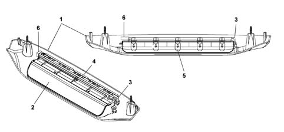
1 - Casing 2 - Lens cover 3 - Spring 4 - Bulb holder casing 5 - 12V- 5W all-glass bulb 6 - Connector seat
Applies to: all engines; all production periods
ADDITIONAL BRAKE LIGHT
The outer casing is made of grey plastic, it contains the bulb holder which is in one piece and is press-fitted to the light casing. The internal current carrier tracks are made from brass and, with the circuit activated, supply 10 small all glass type 12V - 5W bulbs. The light is fitted with two screws to secure it to the tailgate. The light casing is secured to the outer case by means of two screws
Applies to: all engines; all production periods
FITTING BRAKE LIGHTS (LEFT/RIGHT)
Brake light switch PIN-OUT
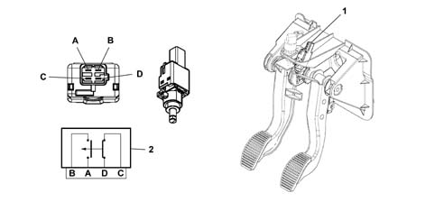
A - From fuse F35 facia control unit (int. key) B - From fuse F37 facia control unit (int. key) C - From ABS (NFR) control unit PIN 20 D - Dal Facia Node connector M001E PIN 5 1 - Brake switch on pedal unit 2 - Connector wiring diagram
Applies to: all engines; all production periods
FITTING BRAKE LIGHTS (LEFT/RIGHT)
The brake lights function is activated with the ignition key in the ON position (INT) with voltage.
Position of switch C - D normally closed (n.c.) with pedal released
Position of switch A - B normally open (n.o.) with pedal released
When the pedal is pressed:
- The voltage signal at PIN 20 of the ABS control unit (NFR) is removed
- The body computer receives a voltage signal and recognizes from this that the position of the brake pedal differs from the rest position (pedal released) and it supplies the brake lights
The facia node is capable of recognizing the following faults:
- Circuit open (with key-on and with command active): blown bulb indication
- Short circuit to VB (with key-on and with command actice: bulb fault indicated
Applies to: all engines; all production periods
FOGLAMPS
The foglamps are located in the lower part of the front bumper The unit is equipped with one screw to adjust light beam direction.
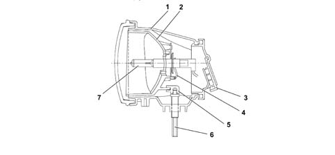
1 - Headlamp casing 2 - Reflector 3 - Plug 4 - Bulb retaining clip 5 - Adjustment block 6 - Adjustment screw 7 - HI bulb
Applies to: all engines; all production periods
CENTRE SWITCH CONTROL PANEL
The central control panel is a control module located on a central console connected to the facia cable, from which it receives power for the symbol lighting. It accommodates the folowing controls:
- fog lights
- rear fog lamps
- heated rear windscreen
- hazard warning lights and warning light
- ASR deactivation and warning light
- deterrent led (where present)
- City function for electric steering
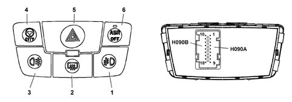
1 - Fog lights control button 2 - Heated rear windscreen on button 3 - Rear fog llight control button 4 - CITY function activation button 5 - Hazard warning lights control button (HAZARD) with warning light 6 - ASR deactivation button with warning light H090 - Connector
Applies to: all engines; all production periods
CENTRE SWITCH CONTROL PANEL
CONNECTOR H090 PIN OUT
Conn. | Pin | Operation |
|---|---|---|
H090A | relay | Control panel earth |
H090A | relay | Hazard warning light on led positive command |
H090A | 3 | Negative signal from heated rear window control button |
H090A | 4 | Hazard warning light control negative signal |
H090A | 5 | Rear fog lamp negative control signal |
H090A | 6 | N.C. |
H090A | 7 | N.C. |
H090A | 8 | N.C. |
H090A | 9 | N.C. |
H090B | 10 | N.C. |
H090B | 11. | N.C. |
H090B | 12. | Fog lamp control negative signal |
H090B | 13 | INT from F-35 SCA |
H090B | 14 | City function negative control signal |
H090B | 15 | Deterrent led positive signal |
H090B | 16 | N.C. |
H090B | 17 | ASR deactivation positive control signal |
H090B | 18 | ASR/VDC function negative led signal |
Applies to: all engines; all production periods
SWITCHING ON DIRECTION INDICATORS WITH WARNING LIGHTS
The direction indicators function is activated by the following enablements:
- The ignition key in the ON position (INT) with voltage
- The Facia Node (NPL) receives commands in the form of earth signals to turn on the left direction indicator or the right direction indicator using the steering column switch unit
- The NPL also manages the frequency (about 90 cycles +/- 15 per minute) which is sent to all the bulbs on the branch activated.
- When the function is activated the left and right direction indicator warning lights in the instrument panel are lit up: the instrument panel (NQS) switches on the appropriate warning lights in harmony with the messages coming from the NPL.
Applies to: all engines; all production periods
SWITCHING ON HAZARD WARNING LIGHTS AND WARNING LIGHT
The Facia Node (NPL) receives an instruction to activate the hazard warning lights from the unstable type button in the centre panel. It is an earth signal. The flashing frequency of the lights; the flashing mode of the warning lights in the instrument panel (NQS) is identical to the description for the direction indicators function, but with the difference of all the direction indicators coming on at the same time.
An LED at the back of the control switch (HAZARD) also comes on when the outside lights are flashing.
Applies to: all engines; all production periods
DIRECTION INDICATORS/HAZARD WARNING LIGHTS AUDITORY SIGNAL
At the same time as the direction indicator warning lights in the instrument panel (NQS) flash, there is also a low frequency auditory signal which produces a noise of around 50 dB (decibel) at 100 cm.
Applies to: all engines; all production periods
SWITCHING ON FOG LIGHTS (RELAY T14)
The fog lights function is activated by the following enablements:
- Ignition key in ON position (INT/A).
- Switching on the side lights (at the steering column switch unit)
- Pressing, for at leas 50 msecs. the fog lights control button
- Earth signal sent from the Facia Node (NPL) to the coil of relay (T14) located on the Engine Wiring Box (SCM) that closes to turn on the foglamps
When the foglamps come on, the NQS receives a signal via the B-CAN network and manages the 'foglamp on' signal by turning on the warning light.
The fog light can be switched off if there is no signal (INT/A) or side lights control signal or by pressing the fog lights control button again for at elast 50 msecs.
Applies to: all engines; all production periods
SWITCHING ON LEFT REAR FOG LAMP WITH WARNING LIGHT
The rear fog lamps function is activated by the following enablements:
- Ignition key in ON position (INT) with voltage
- Switching on the side lights (at the steering column switch unit)
- Activating the headlamps (dipped or main beam) or fog lights
- Pressing the rear fog lamps control button for at least 50 msecs.
- When the earth signal is received from the rear fog lamp button, the Facia Node activates the light in the left light cluster and sends a rear foglamp status control on the B-CAN network to activate/deactivate the indication on the instrument panel.
- The Instrument Panel Node acquires the rear fog lamp signal from the B-CAN network and manages a 'rear foglamp on' indication on the control panel by turning on the relevant warning light.
The Facia Node is able to detect the following faults:
- Circuit open (with key-on and control present): bulb missing signal
- Short-circuit to earth (with key-on and control present: bulb short circuit indicated.
- Short-circuit to +VB (with key-on and control present): bulb fault indicated.
- Bulb check with key-on and control present): if 21W bulb replaced by 5W bulb, bulb missing indication given.
Applies to: all engines; all production periods
SWITCHING ON REVERSING LIGHT
The reversing light function is only activated with:
- The ignition key in the ON position (INT) with voltage
- The bulb supplied directly by the reversing light switch via the Passenger Compartment Wiring Box (SCA)
- The Facia Node makes the reverse gear engagement status available to the CAN network.
Applies to: all engines; all production periods
OPERATION OF LIGHTS
All the controls for operating the lighting system are located on the steering column switch unit. The user should adjust the main switch (ring nut) to switch on the side lights and the left lever for the main beam/dipped headlamps (for both the stable position and flashing).
The fog lights are switched on by pressing the special button in the centre switch panel.
For further details on the operation of the side lights, main beam/dipped headlamps, fog lights and direction indicators for changing lane, see 5550 MANOEUVRING AND WARNING SIGNALS.
Applies to: all engines; all production periods
AUTOMATIC SWITCHING ON AND OFF OF SIDE LIGHTS/DIPPED HEADLAMPS (FOLLOW ME HOME FUNCTION)
This function controls the dipped headlamps and the side lights immediately after the engine has been switched off (key in OFF position).
Applies to: all engines; all production periods
Function activation
The function may be activated only within 2 minutes of key-OFF (transition from key-ON) by issuing a light flasher command from the stalk (follow-me-home activation).
Following this command, the Facia Node turns on the side lights and low beams for 30 seconds and sends a signal on the B-CAN network.
The NQS reads the light flasher command on the B-CAN network and sets the follow me home indication time to 30 seconds.
Applies to: all engines; all production periods
Increasing follow me home time
With the function active (side lights and low beams on), even once 2 minutes have elapsed after key-OFF. whenever a light flasher control is issued using the stalk, the NPL increases the time the lights stay on for an additional 30 seconds to a total maximum time of 210 seconds (7 commands). At each light flasher command with the follow me home function active, the NPL sends a signal to the B-CAN network regardless of the number of commands already received.
Each time it reads a signal, the NQS increase the follow me home indication time value by 30 seconds. Like the NPL, the NQS can accept up to 7 commands and ignores further commands.
Applies to: all engines; all production periods
Function deactivation.
When the light flasher command is maintained for longer than 2 seconds, the NPL turns off the side lights and low beams, resets the counter for the time the lights stay on and resets the counter for 7 effective commands. The function deactivation command need not necessarily be issued within 2 minutes of key-OFF and none of the 7 commands needs to be effective to increase the time the lights stay on. For it to be effective, the follow me home function only needs to be active.
The NQS then zeros the follow me home indication time and the commands received counter.
After deactivation, the follow me home function can be reactivated, again by operating the light flasher stalk within 2 minutes of key-OFF.
Applies to: all engines; all production periods
End of function
Once the time the lights stay on ordered by the NPL has elapsed, the follow me home function is deactivated. The NPL then turns off the side lights and dipped lights and resets the counter to 7 effective commands. The NQS then resets the time for the follow me home indication and the commands received counter.
All the times described above have a tolerance of +/- 5%
Key-ON: switching from Key-OFF to Key-ON with follow me home active leads to function deactivation. All lights are then switched off.
Applies to: all engines; all production periods
Follow me home indication
Each function activation within the 7 effective commands for follow me home activation/increase causes the NQS to activate the follow me home indication. This displays the stored light activation time that has been updated during the process. This indication remains active for 20 seconds.
During this 20 seconds, the indication is turned off if a follow me home deactivation command is issued.
Applies to: all engines; all production periods
SWITCHING ON SIDE LIGHTS AND WARNING LIGHT IN PANEL
The side lights function is activated by two enablements:
- Ignition key in ON (INT) and (POS) with voltage
- Steering column switch unit ring nut turned from position (0) to ideogram of bulb with rays lit up The body computer supplies the side lights, two at a time, for the right side and the left side, plus the two no. plate lights. The side lights warning light located in the instrument panel is activated or deactivated by the body computer via the CAN network, the instrument panel (NQS) also has the task of activating the screen-printing night lights.
Since the branches of the side lights are all separate, the Facia Node is capable of recognizing the following problems:
- Open circuit, or bulb failure
- Circuit to earth (bulb short circutied or wiring short circuited to earth)
- Short circuit to +VB (wiring short circuited to Vbatt)
- 5W bulb replaced by a 21W bulb
- Replacement of 21W bulb with a 5W bulb
Applies to: all engines; all production periods
SWITCHING ON PARKING LIGHTS
The parking lights function uses the side light bulb charge and is activated by turning on the side lights (POS on steering wheel stalk wheel) with key-off in accordance with the procedure described below:
- turn the wheel on the right steering wheel stalk to 'side lights on'. If the left and right direction indicator inputs at the steering column switch unit are deactivated, the side/parking lights, including the no. plate lights and the warning light in the instrument panel (NQS) on both sides come on.
- At the steering column switch unit: 'right direction indicator not activated' and 'left direction indicator activated' only the side/parking lights on the left side are on, the warning light in the instrument panel (NQS) and the no. plate lights remain off.
- At the steering column switch unit: 'left direction indicator not activated' and 'right direction indicator activated' only the side/parking lights on the right side are on, the warning light in the instrument panel (NQS) and the no. plate lights remain off.
If the user has left the side lights on at the time of Key-Off, the parking lights are NOT turned on. To turn them on, the user must turn the wheel OFF and then to POS.
The command is stable.
At the next key-on, with a parking light control present, the side lights are turned on. The parking lights are turned on regardless of the time elapsed from the time of keyof and whether the key is in the ignition.
Applies to: all engines; all production periods
NUMBER PLATE LIGHT ACTIVATION
When the side lights are turned on, the Facia Node turns on the number plate lights simultaneously . When the side light activation control ceases, the number plate lights are immediately turned off.
When the parking lights are activated in the absence fo a left or right turn signal command from the stalk, the Facia Node immediately turns on the number plate lights. When the parking light activation control ceases, the number plate lights are immediately turned off.
The number plate lights are tested independently in order to issue a fault signal when only one bulb is inoperational or incorrect. The Facia Node is able to detect the following faults:
- Circuit in open with key-on and in presence of command: bulb missing signal
- Circuit open to earth with key-on and in presence of command: bulb indication short-circuited
- Short circuit to +VB with key-on and in presence of command: bulb indication faulty.
Applies to: all engines; all production periods
ACTIVATION OF LOW BEAMS AND DASHBOARD WARNING LIGHT
The dipped headlamps function is activated by the following enablements:
- Ignition key in ON positino (15/54) with voltage
- Steering column switch unit ring nut turned from ideogram for bulb lit up with rays to ideogram for dipped headlamps (earth signal sent from steering column switch unit to Facia Node)
- Electronic earth signal sent from facia Node to relay built into node that closes to turn on the low beams.
Applies to: all engines; all production periods
SWITCHING ON MAIN BEAM HEADLAMPS (RELAY T02)
The main beam headlamps function is activated by the following enablements:
- Ignition key in ON position (15/54) with voltage.
- With the ring nut in the dipped headlamps idoegram position, it is possible to switch from dipped and main beam headlamps by pushing the lever towards the dashboard (stable position); an earth signal is sent by the steering column switch unit to the Facia Node. The low beam warning light on the instrument panel is activated/deactivated by the Instrument Panel Node (NQS) according to the signal sent by the NPL via the CAN network.
- Earth signal sent by the Facia Node to the relay coil (T02) located in the Engine Wiring Box (SCA) which, on closing, lights up the main beam headlamps.
- The same function as described above is produced by pulling the steering column switch unit lever towards the steering wheel (flashing or unstable lever position) irrespective of the position of the ring nut. (flashing is generated by the main beam headlamps)
Applies to: all engines; all production periods
OPERATION AND ADJUSTMENT (HEADLAMP ALIGNMENT)
The headlamp alignment adjustment device is designed to correctly position the dipped headlamp light beam, in a vertical direction, irrespective of the load on the axles.
When the ignition key is turned to the ON position, the instrument panel (NQS) does not display either the position (0, 1, 2, 3) or the symbol until the dipped headlamps are activated.
The condition that appears is the last value memorized when the key was turned from ON to OFF.
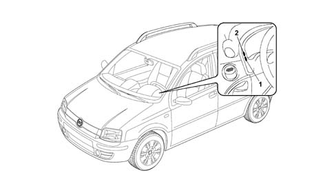
1 - Alighnment correction up 2 - Alignment correction down
Applies to: all engines; all production periods
OPERATION AND ADJUSTMENT (HEADLAMP ALIGNMENT)
When the key is turned ON and the dipped headlamps are on, when the two buttons (1) and (2) on the instrument panel frame are pressed, it is possible to alter the inclination/orientation of the light cluster in 4 standard positions. The set value is memorised and displayed on the instrument panel together with a symbol.
In practice, when the instrument panel connector receives the increase signal (CAF +) or descrease signal (CAF -) from buttons (1) and (2), it checks, via a control and adjustment module, whether there is a positive supply for the dipped headlamps. If this is the case, it produces and sends an adjustment signal to the headlamp alignment motors. The instrument panel (NQS) electronic circuitry output signal has a maximum voltage value for position (0) and decreases for the subsequent positions (1- 2- 3) with an identification level which allows the actuator incorporated in the light cluster to be operated to move the parabola.
Voltage values corresponding to selected positions are shown below:
- Position 0: 11.42V ± 0.2
- Position 1: 8.89V ± 0.2
- Position 2: 7.59V ± 0.2
- Position 3: 6.25V ± 0.2
It is not possible to carry out any adjustments with the ignition switched OFF.
Prolonged operation of the ailgnmnet regulation buttons does not bring about gradual adjustment.
Disconnecting the battery or resetting the system causes the value memorized to be lost and a value predefined by the manufacturer, in this case zero (0) to be assumed (predefined = default = standard).
Applies to: all engines; all production periods
HEADLAMP ALIGNMENT POSITION ACCORDING TO VEHICLE LOAD
The following loads correspond to the four positions:
- 0 - 1 person (driver), 2 persons (in the front seats)
- 1 - 5 persons, 2 persons (in the front seats), 3 persons (in the rear seats)
- 2 - 5 persons plus maximum load
- 3 - 1 person (driver) plus maximum permissible load in luggage compartment without backrest folded over
The maximum load refers to: the maximum permissible load on the rear axle or: the total permissible load for the vehicle. The weight of a person is considered to be 75 kg.
Applies to: all engines; all production periods
HEADLAMP ALIGNMENT
Each light cluster, depending on its function, is distinguished by one of the following markings on the glass:
- C or HC: light cluster for emitting dipped beam
- R or HR: light cluster for emitting full beam
- CR or HCR: light cluster for emitting both dipped beam and full beam
- B or HB: front fog light
Applies to: all engines; all production periods
PREPARATION OF THE VEHICLE
Position the vehicle 'empty', with tyres inflated to the full load pressure and with a person in the driver's seat (the weight of a person is considered to be 75 kg), on a flat, horizontal surface, with the reference centre of the headlamps 10 m from the screen. The vehicle should have all supplies (fuel, water, oil) and be equipped with all accessories and tools.
Applies to: all engines; all production periods
SCREEN
This should consists of an opaque surface on which the following lines have been traced:
- V-V: verticala, coresponding to the trace of the plane of symmetry of the vehicle;
- C-C: traces of the vertical planes passing through the reference centres of the light clusters C-CR-HC-HCR;
- Hc-Hc: horizontal corresponding to the height from the ground of the reference centres for the light clusters C-CR-HC-HCR;
- Ac-Ac: horizontal 13.6 cm below Hc-Hc (value for new vehicles corresponding to a lowering of 1.36%)
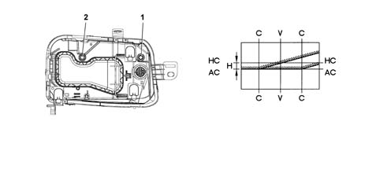
1 - Adjustment screw for headlamp horizontal axis 2 - Adjustment screw for headlamp vertical axis
Applies to: all engines; all production periods
SCREEN
Alway start with the horizontal adjustment of the headlamps and then move on to the vertical adjustment. Finer operation than the previous one.
Applies to: all engines; all production periods
ORIENTATION
Carry out the adjustment of these light clusters on the dipped beam by adjusting the height from the ground for the demarcation line between the area lit up and the dark area and the position of the point where the horizontal section crosses the inclined part of the demarcation line for both the left and right light clusters. Proceed as follows:
- Horizontal adjustment: act on the horizontal adjustment device 1 for the light cluster so that the point where the two horizontal and inclined demarcation lines cross over coincide with the point where lines C - C and Ac - Ac cross over on the screen. The maximum permissible movement of the vehicle towards the outside of the screen is 175 mm max (1°).
- Vertical adjustment: act on the vertical adjustment screw for the light cluster so that the horizontal section of the demarcation line between the area which is dark and the area which is lit up by the luminous beam coincides with the line Ac - Ac on the screen.
Applies to: all engines; all production periods
RAPID ADJUSTMENT (WITH PHOTOMETRIC EQUIPMENT)
It is possible to use optic devices to speed up the operations of adjusting the light clusters which reproduce the features on a screen 10 m away. The reference lines conforming to the values for the different vehicles must be traced on each screen for these devices according to the reproduction scale for the actual device.
Applies to: all engines; all production periods
TYPE OF BULBS FITTED
The diagram below shows the types of bulbs fitted.
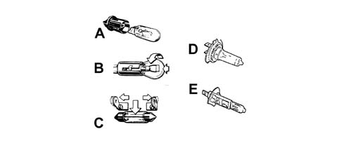
A - All glass bulbs. (12V-2,3W) (12V-5W) They are a press-fit. Pull them to extract them. B - Bayonet fitting bulbs (12V-21W) (12V-5W) (12V - 21/5W) To extract them from the bulb holder: press the bulb, rotate it in an anti-clockwise direction, then extract it. C - Cylindrical bulbs. (12V-10W) (12V-5W) To extract them, release them from the contacts. D-E - Halogen bulbs. (12V-55W H7) (12V-55W H1) To remove the bulb, release the spring fastening the actual bulb to the housing.
Applies to: all engines; all production periods
TYPE OF BULBS FITTED
Bulbs which are not working properly should be replaced with ones of the same type and rating. After this operation, check the headlamp alignment.
When handling halogen bulbs, only touch the metal part. Touching the transparent part of the bulb with your fingers reduces the intensity of the light given off by the bulb and can also adversely affect the life of the actual bulb. In the case of accidental contact, clean the bulb with a cloth soaked in alcohol and leave it to dry.
Halogen bulbs contain pressurized gas; if they break, fragments of glass may be projected.